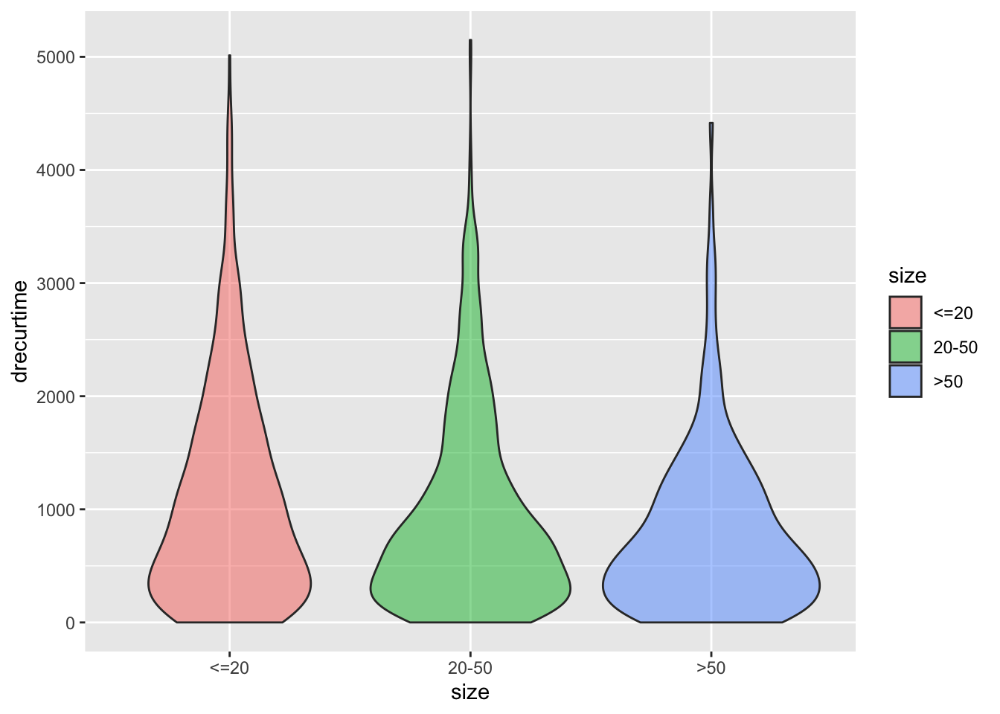
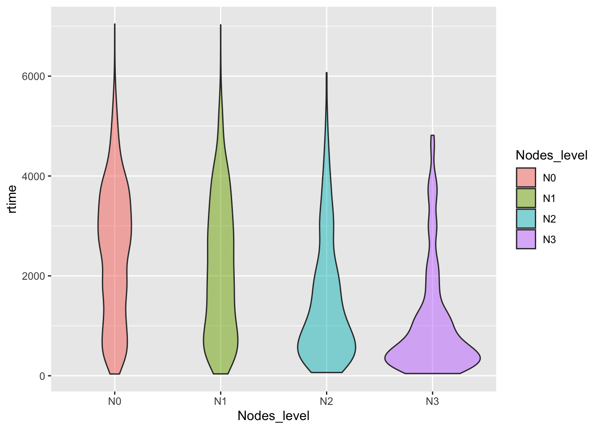

Chapter2 Data Exploration
2.1 Loading Data
The data that we are going to use is called rotterdam, and it is a dataset that’s pre-recorded in the survival package. According to the documentation of the package, the data are retrieved from the Rotterdam tumor bank, which include various anonymous information about patients with breast cancer. Below is a table of the variables in the dataset:
| Variable name | Description |
|---|---|
pid |
patient identifier |
year |
year of cancer incidence |
age |
age |
meno |
menopausal status (0= premenopausal, 1= postmenopausal) |
size |
tumor size, a factor with levels <=20, 20-50, >50 |
grade |
tumor grade |
nodes |
number of positive lymph nodes |
pgr |
progesterone receptors (fmol/l) |
er |
estrogen receptors (fmol/l) |
hormon |
hormonal treatment (0=no, 1=yes) |
chemo |
chemotherapy |
rtime |
days to recurrence or last follow-up |
recur |
0= no recurrence, 1= recurrence |
dtime |
days to death or last follow-up |
death |
0= alive, 1= dead |
From the description above, we see that there are size which stands for the size of the tumor, nodes which stands for how many lymph nodes are test cancer positive, so we have 2 criterions out of the three suggested in the background info.
2.2 Data Wrangling
## # A tibble: 3 x 2
## size number
## <fct> <int>
## 1 <=20 1387
## 2 20-50 1291
## 3 >50 304For lymph nodes, the usual way of classifying the severity would be:N0 for no positive nodes; N1 for 1-3 positive nodes; N2 for 4-9 positive nodes; and N3 for more than 10 nodes. We will follow this classification and make a new factor called Nodes_level
rotterdam <- rotterdam %>%
mutate(Nodes_level = ifelse(nodes == 0, "N0",
ifelse(nodes >= 1 & nodes <= 3, "N1",
ifelse(nodes >= 4 & nodes <= 9, "N2",
ifelse(nodes >= 10, "N3", NaN)))))
rotterdam %>%
group_by(Nodes_level) %>%
summarise(number = n(), .groups = 'drop')## # A tibble: 4 x 2
## Nodes_level number
## <chr> <int>
## 1 N0 1436
## 2 N1 764
## 3 N2 515
## 4 N3 267Since the grade variable in our dataset is a numeric variable whereas we actually want to treat it as a factor, we do the following:
As we were examining through the data, we found that upon the chemo variable and the hormon variable, there are instances where patients gets both therapy or neither. So in order to explore the relationship between treatment and survival, we introduce a new variable called Treatment, using the chemo and hormon variables.
2.3 Data visualizations
2.3.1 Diagnositcs vs. Survival Times
size vs. dtime

size vs. rtime
Nodes_level vs. dtime
ggplot(data = rotterdam, aes(x = Nodes_level, y = dtime, fill = Nodes_level)) +
geom_violin(alpha = 0.7)Nodes_level vs. rtime
ggplot(data = rotterdam, aes(x = Nodes_level, y = rtime, fill = Nodes_level)) +
geom_violin(alpha = 0.7)
2.3.2 Treatment vs. Survival Times
Treatment vs. dtime
ggplot(data = rotterdam, aes(x = Treatment, y = dtime, fill = Treatment)) +
geom_violin(alpha = 0.7)
Treatment vs. rtime
ggplot(data = rotterdam, aes(x = Treatment, y = rtime, fill = Treatment)) +
geom_violin(alpha = 0.7)
A very important criterion in analysis about cancer is the 5-year survival rate. In order to examine that, we introduce a new variable called 5_year_survival, which indicates 1 if a patients survival time is larger than 5 years and 0 vice versa.
rotterdam <- rotterdam %>%
mutate(dtime_Years = floor(dtime/365)) %>%
mutate(`5_year_survival` = ifelse(dtime_Years >= 5, 1, 0))Now we want to calculate the 5-year survival rate for the population in the dataset.
## # A tibble: 2 x 2
## `5_year_survival` number
## <dbl> <int>
## 1 0 898
## 2 1 2084## [1] 0.6988598And also the important 10-year survival rate.
rotterdam <- rotterdam %>%
mutate(dtime_Years = floor(dtime/365)) %>%
mutate(`10_year_survival` = ifelse(dtime_Years >= 10, 1, 0))Now we calculate the 10-year survival rate for the population in the dataset.
## # A tibble: 2 x 2
## `10_year_survival` number
## <dbl> <int>
## 1 0 2297
## 2 1 685## [1] 0.2297116